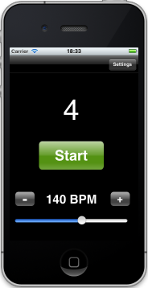
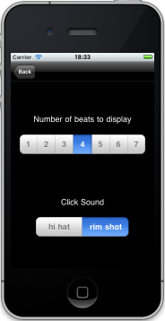

Why you'll love it:
- Great sounding clicks to choose from.
- Visual beat indicator makes it easy to practice in any time signature.
- Music-stand friendly interface, designed with your practicing needs in mind.
- It's free!
Why I made it:
I built Beatdown Metronome because I wanted a metronome for my iPhone that had quality click sounds that I wouldn't tire of during long practice sessions, and could be easily controlled while sitting on my music stand. I wanted a visual indicator of the current beat, for when I practice music in odd time signatures, and the ability to adjust the tempo precisely and quickly.
What it looks like:


Have a question, need to report or a bug, or have any ideas for us? Send us an email.